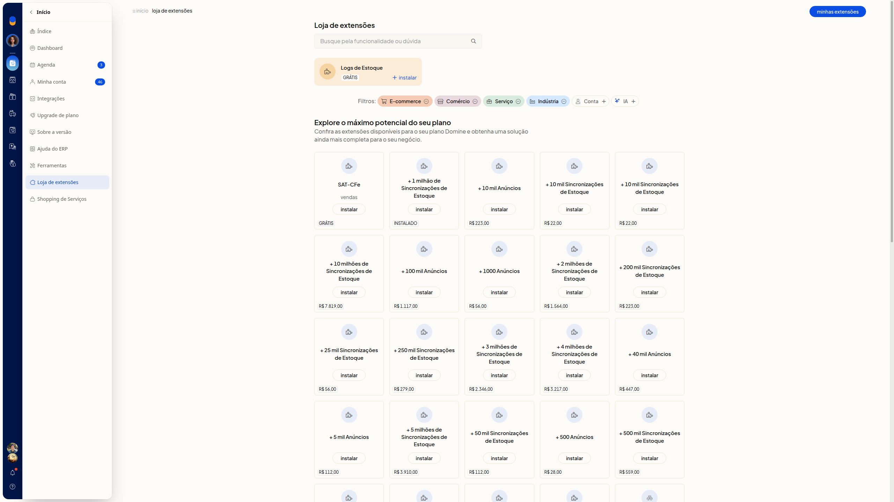
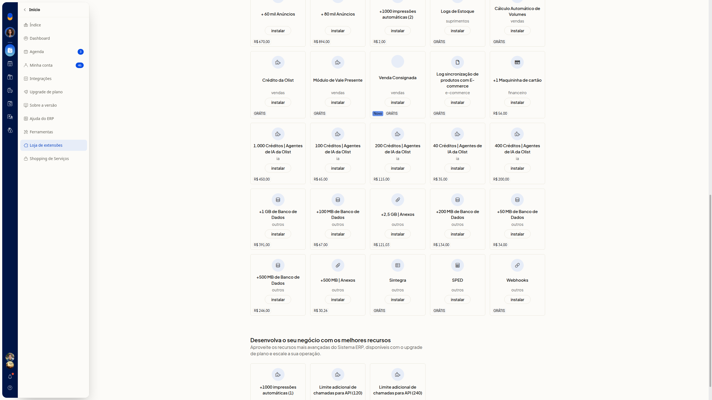
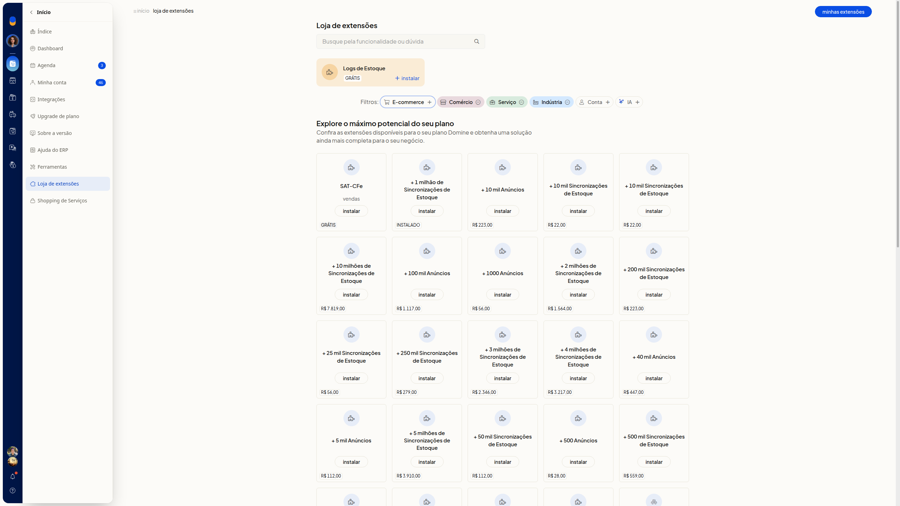
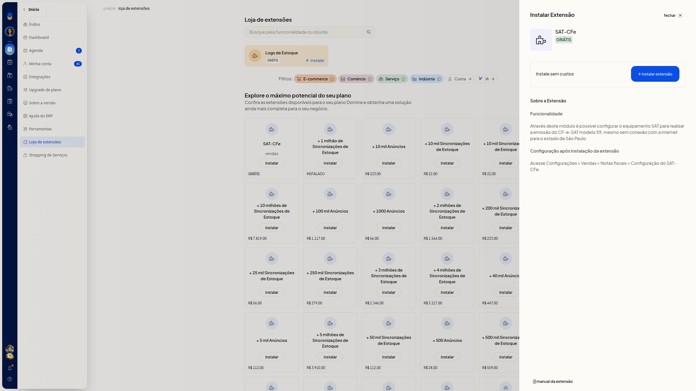
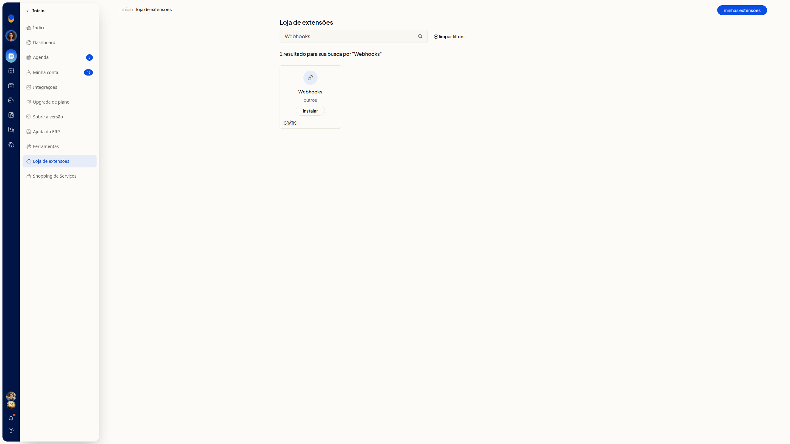
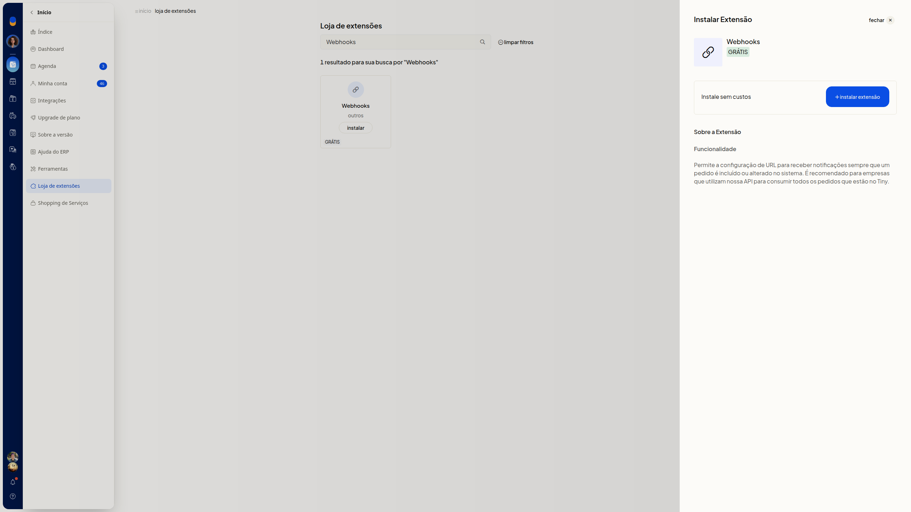
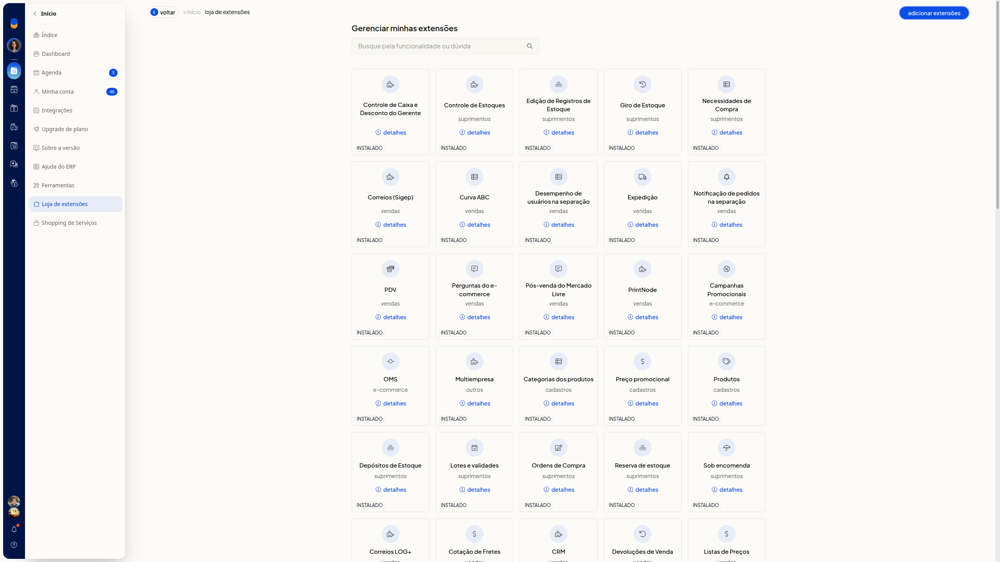
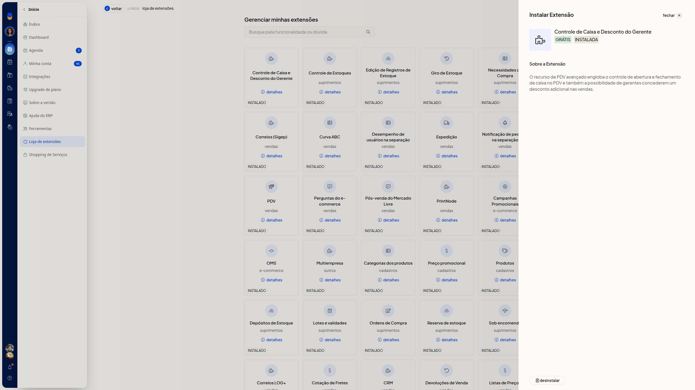

Loja de extensões: instalar e gerenciar
A Loja de extensões do ERP da Olist reúne as extensões disponíveis para a sua conta. Você consulta o catálogo, instala as extensões gratuitas e acompanha as que já estão instaladas.
Em Início > Loja de extensões você busca por funcionalidade, revisa a descrição no painel Instalar Extensão antes de confirmar e abre Minhas extensões para ver o que já está instalado.
Importante
- A instalação gratuita só é concluída no botão instalar extensão, dentro do painel Instalar Extensão.
- O botão Instalar do card abre esse painel e não conclui a instalação.
- Para instalar sem custo, escolha uma extensão com o selo GRÁTIS.
- O botão Desinstalar remove a extensão instalada. Não use esse botão se quiser apenas consultar o detalhe.
Instruções
Instalar uma extensão gratuita
-
Acesse Início > Loja de extensões.
-
Localize uma extensão com o selo GRÁTIS.


-
Clique em um filtro ao lado de Filtros se quiser restringir a lista: E-commerce, Comércio, Serviço, Indústria, Conta ou IA.

-
Clique em Instalar no card. No card em destaque de Logs de Estoque, o botão aparece como + instalar.
-
Confira no painel Instalar Extensão o nome, o selo GRÁTIS, o texto Instale sem custos e a seção Sobre a Extensão.

-
Clique em instalar extensão para concluir a instalação.
Buscar uma extensão
-
Em Loja de extensões, digite o termo no campo Busque pela funcionalidade ou dúvida. O preenchimento não é obrigatório. Por exemplo, Webhooks.
-
Confira a quantidade de resultados e o link limpar filtros.

-
Clique em Instalar no card encontrado.
-
Confira o painel Instalar Extensão, com o selo GRÁTIS e o texto Instale sem custos. Em Webhooks, a seção Funcionalidade descreve a configuração de URL para receber notificações quando um pedido é incluído ou alterado. O texto recomenda o uso por empresas que utilizam a API para consumir os pedidos.

-
Clique em instalar extensão para concluir a instalação.
Gerenciar extensões instaladas
-
Em Loja de extensões, clique em Minhas extensões.
-
Localize o card com o estado Instalado. A tela Gerenciar minhas extensões também mostra a busca e o botão adicionar extensões.

-
Clique em detalhes no card desejado.
-
Confira o nome, os selos GRÁTIS e INSTALADA e a seção Sobre a Extensão.

-
Clique em Desinstalar somente se quiser remover a extensão. Esse botão remove a extensão instalada.
Resultado
Em Gerenciar minhas extensões, as extensões já instaladas aparecem com o estado Instalado e o link detalhes. No detalhe, Desinstalar fica disponível.
Informações adicionais
O catálogo também lista adicionais pagos
O catálogo também lista adicionais pagos, com preço e o botão Instalar, como pacotes de anúncios, sincronizações de estoque, impressões automáticas, maquininha e créditos de IA.
Extensão já instalada no catálogo
Uma extensão já instalada pode aparecer no catálogo com o estado Instalado, e não como uma instalação nova. O card + 1 milhão de Sincronizações de Estoque fica assim.